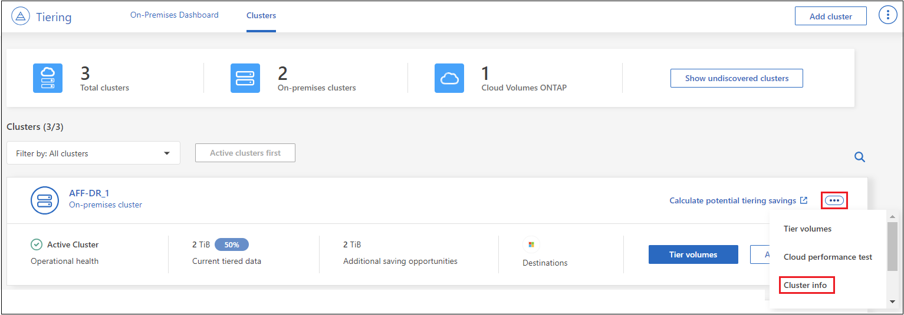
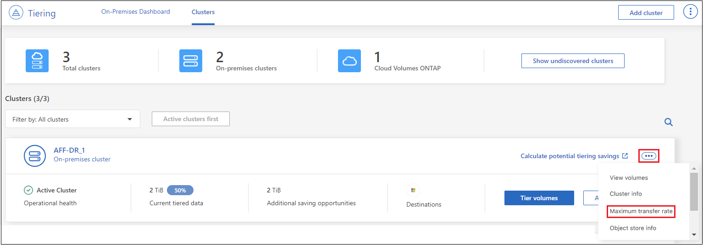

Inizia subito
Inizia subito
Gestione del tiering dei dati per i cluster
 Suggerisci modifiche
Suggerisci modifiche
Ora che hai impostato il tiering dei dati dai cluster ONTAP on-premise, puoi tierare i dati da volumi aggiuntivi, modificare la policy di tiering di un volume, scoprire cluster aggiuntivi e molto altro ancora.
Revisione delle informazioni di tiering per un cluster
Potresti voler vedere la quantità di dati nel Tier cloud e la quantità di dati presenti sui dischi. In alternativa, è possibile visualizzare la quantità di dati hot e cold sui dischi del cluster. BlueXP Tiering fornisce queste informazioni per ogni cluster.
-
Dal menu di navigazione a sinistra, selezionare mobilità > Tiering.
-
Nella pagina Clusters, fare clic sull'icona del menu
 Per un cluster e selezionare Cluster info.
Per un cluster e selezionare Cluster info.
-
Esaminare i dettagli del cluster.
Ecco un esempio:

Si noti che il display è diverso per i sistemi Cloud Volumes ONTAP. Anche se i volumi Cloud Volumes ONTAP possono avere dati a più livelli nel cloud, non utilizzano il servizio di tiering BlueXP. "Scopri come eseguire il tiering dei dati inattivi dai sistemi Cloud Volumes ONTAP allo storage a oggetti a basso costo".
Puoi anche farlo "Visualizzazione delle informazioni di tiering per un cluster di Digital Advisor" Se hai familiarità con questo prodotto NetApp. Seleziona Cloud Recommendations dal riquadro di navigazione a sinistra.

Tiering dei dati da volumi aggiuntivi
Impostare il tiering dei dati per volumi aggiuntivi in qualsiasi momento, ad esempio dopo la creazione di un nuovo volume.

|
Non è necessario configurare lo storage a oggetti perché è già stato configurato durante la configurazione iniziale del tiering per il cluster. ONTAP eseguirà il tiering dei dati inattivi da eventuali volumi aggiuntivi nello stesso archivio di oggetti. |
-
Dal menu di navigazione a sinistra, selezionare mobilità > Tiering.
-
Dalla pagina Clusters, fare clic su Tier Volumes per il cluster.

-
Nella pagina Tier Volumes, selezionare i volumi per i quali si desidera configurare il tiering e avviare la pagina Tiering Policy:
-
Per selezionare tutti i volumi, selezionare la casella nella riga del titolo (
 ) E fare clic su Configure Volumes (Configura volumi).
) E fare clic su Configure Volumes (Configura volumi). -
Per selezionare più volumi, selezionare la casella relativa a ciascun volume (
 ) E fare clic su Configure Volumes (Configura volumi).
) E fare clic su Configure Volumes (Configura volumi). -
Per selezionare un singolo volume, fare clic sulla riga (o.
 ) per il volume.
) per il volume.
-
-
Nella finestra di dialogo Tiering Policy, selezionare una policy di tiering, regolare i giorni di raffreddamento per i volumi selezionati e fare clic su Apply (Applica).

I volumi selezionati iniziano a disporre dei dati su più livelli nel cloud.
Modifica della policy di tiering di un volume
La modifica del criterio di tiering per un volume modifica il modo in cui ONTAP esegue il tiering dei dati cold in storage a oggetti. La modifica inizia dal momento in cui si modifica la policy. Cambia solo il comportamento di tiering successivo per il volume, non sposta retroattivamente i dati nel Tier cloud.
-
Dal menu di navigazione a sinistra, selezionare mobilità > Tiering.
-
Dalla pagina Clusters, fare clic su Tier Volumes per il cluster.
-
Fare clic sulla riga di un volume, selezionare una policy di tiering, regolare i giorni di raffreddamento e fare clic su Apply (Applica).
Nota: se vengono visualizzate le opzioni per il "Retrieve Tiered Data", vedere Migrazione dei dati dal livello cloud al livello di performance per ulteriori informazioni.
La policy di tiering viene modificata e i dati iniziano a essere tierati in base alla nuova policy.
Modifica della larghezza di banda della rete disponibile per caricare i dati inattivi nello storage a oggetti
Quando si attiva il tiering BlueXP per un cluster, per impostazione predefinita, ONTAP può utilizzare una quantità illimitata di larghezza di banda per trasferire i dati inattivi dai volumi nell'ambiente di lavoro allo storage a oggetti. Se si nota che il traffico di tiering influisce sui normali carichi di lavoro degli utenti, è possibile ridurre la larghezza di banda della rete utilizzata durante il trasferimento. È possibile scegliere un valore compreso tra 1 e 10,000 Mbps come velocità di trasferimento massima.
-
Dal menu di navigazione a sinistra, selezionare mobilità > Tiering.
-
Nella pagina Clusters, fare clic sull'icona del menu
Per un cluster e selezionare velocità di trasferimento massima.
-
Nella pagina Maximum transfer rate, selezionare il pulsante di opzione Limited e immettere la larghezza di banda massima utilizzabile oppure selezionare Unlimited per indicare che non vi sono limiti. Quindi fare clic su Apply (Applica).

Questa impostazione non influisce sulla larghezza di banda allocata ad altri cluster che eseguono il tiering dei dati.
Scarica un report di tiering per i tuoi volumi
È possibile scaricare un report della pagina Tier Volumes per esaminare lo stato di tiering di tutti i volumi nei cluster che si stanno gestendo. Fare clic su  pulsante. BlueXP Tiering genera un file .CSV che è possibile rivedere e inviare ad altri gruppi in base alle necessità. Il file .CSV include fino a 10,000 righe di dati.
pulsante. BlueXP Tiering genera un file .CSV che è possibile rivedere e inviare ad altri gruppi in base alle necessità. Il file .CSV include fino a 10,000 righe di dati.

Migrazione dei dati dal livello cloud al livello di performance
I dati a più livelli accessibili dal cloud possono essere "ripristinati" e spostati di nuovo al livello di performance. Tuttavia, se si desidera promuovere in modo proattivo i dati nel Tier di performance dal Tier cloud, è possibile farlo nella finestra di dialogo Tiering Policy. Questa funzionalità è disponibile quando si utilizza ONTAP 9.8 e versioni successive.
È possibile farlo se si desidera interrompere l'utilizzo del tiering su un volume o se si decide di mantenere tutti i dati utente sul Tier di performance, mantenendo le copie Snapshot sul Tier cloud.
Sono disponibili due opzioni:
| Opzione | Descrizione | Influenza sulla policy di tiering |
|---|---|---|
Riportare tutti i dati |
Recupera tutti i dati dei volumi e le copie Snapshot a più livelli nel cloud e li promuove al livello di performance. |
La policy di tiering viene modificata in "No policy". |
Ripristinare il file system attivo |
Recupera solo i dati del file system attivi a più livelli nel cloud e li promuove al livello di performance (le copie Snapshot rimangono nel cloud). |
La policy di tiering viene modificata in "Cold Snapshot". |

|
In base alla quantità di dati trasferiti fuori dal cloud, il tuo cloud potrebbe addebitare un costo. |
Assicurarsi di disporre di spazio sufficiente nel Tier delle performance per tutti i dati spostati di nuovo dal cloud.
-
Dal menu di navigazione a sinistra, selezionare mobilità > Tiering.
-
Dalla pagina Clusters, fare clic su Tier Volumes per il cluster.
-
Fare clic su
Per il volume, scegliere l'opzione di recupero che si desidera utilizzare e fare clic su Apply (Applica).
La policy di tiering viene modificata e i dati a più livelli iniziano a essere trasferiti di nuovo al Tier di performance. A seconda della quantità di dati nel cloud, il processo di trasferimento potrebbe richiedere del tempo.
Gestione delle impostazioni di tiering sugli aggregati
Ogni aggregato dei sistemi ONTAP on-premise dispone di due impostazioni che è possibile regolare: La soglia di fullness del tiering e l'attivazione del reporting dei dati inattivi.
- Soglia di fullness tiering
-
Impostando la soglia su un numero inferiore, si riduce la quantità di dati da memorizzare nel Tier di performance prima di eseguire il tiering. Questo potrebbe essere utile per grandi aggregati che contengono pochi dati attivi.
Impostando la soglia su un numero più elevato, si aumenta la quantità di dati da memorizzare nel Tier di performance prima di eseguire il tiering. Questo potrebbe essere utile per le soluzioni progettate per il Tier solo quando gli aggregati sono quasi alla capacità massima.
- Reporting dei dati inattivi
-
Il reporting dei dati inattivi (IDR) utilizza un periodo di raffreddamento di 31 giorni per determinare quali dati sono considerati inattivi. La quantità di dati cold a più livelli dipende dalle policy di tiering impostate sui volumi. Questa quantità potrebbe essere diversa dalla quantità di dati cold rilevata dall'IDR utilizzando un periodo di raffreddamento di 31 giorni.
È meglio mantenere l'IDR abilitato perché aiuta a identificare i dati inattivi e le opportunità di risparmio. IDR deve rimanere abilitato se il tiering dei dati è stato attivato su un aggregato.
-
Dalla pagina Clusters, fare clic su Advanced setup (Configurazione avanzata) per il cluster selezionato.

-
Dalla pagina Advanced Setup (Configurazione avanzata), fare clic sull'icona del menu dell'aggregato e selezionare Modify aggregate (Modifica aggregato).

-
Nella finestra di dialogo visualizzata, modificare la soglia di fullness e scegliere se attivare o disattivare il reporting dei dati inattivi.

-
Fare clic su Apply (Applica).
Correzione dello stato operativo
Possono verificarsi errori. Quando lo fanno, il tiering BlueXP visualizza uno stato di integrità operativo "non riuscito" sul pannello di controllo del cluster. Lo stato di salute riflette lo stato del sistema ONTAP e di BlueXP.
-
Identificare tutti i cluster con stato operativo "Failed" (guasto).
-
Passare il mouse sull'icona informativa "i" per visualizzare il motivo del guasto.
-
Correggere il problema:
-
Verificare che il cluster ONTAP sia operativo e che disponga di una connessione in entrata e in uscita con il provider di storage a oggetti.
-
Verificare che BlueXP disponga di connessioni in uscita al servizio di tiering BlueXP, all'archivio di oggetti e ai cluster ONTAP che rileva.
-
Rilevamento di cluster aggiuntivi da BlueXP Tiering
È possibile aggiungere i cluster ONTAP on-premise non rilevati a BlueXP dalla pagina cluster di tiering in modo da abilitare il tiering per il cluster.
Si noti che i pulsanti vengono visualizzati anche nella pagina _dashboard on-Prem di Tiering per individuare altri cluster.
-
Da BlueXP Tiering, fare clic sulla scheda Clusters.
-
Per visualizzare i cluster non rilevati, fare clic su Mostra cluster non rilevati.

Se le credenziali NSS vengono salvate in BlueXP, i cluster dell'account vengono visualizzati nell'elenco.
Se le credenziali NSS non vengono salvate in BlueXP, viene richiesto di aggiungere le credenziali prima di visualizzare i cluster non rilevati.

-
Fare clic su Discover Cluster per il cluster che si desidera gestire tramite BlueXP e implementare il tiering dei dati.
-
Nella pagina Cluster Details, inserire la password per l'account utente admin e fare clic su Discover.
Tenere presente che l'indirizzo IP di gestione del cluster viene compilato in base alle informazioni dell'account NSS.
-
Nella pagina Dettagli e credenziali il nome del cluster viene aggiunto come nome dell'ambiente di lavoro, quindi fare clic su Go.
BlueXP rileva il cluster e lo aggiunge a un ambiente di lavoro in Canvas utilizzando il nome del cluster come nome dell'ambiente di lavoro.
È possibile attivare il servizio di tiering o altri servizi per questo cluster nel pannello di destra.
Cerca un cluster in tutti i connettori BlueXP
Se si utilizzano più connettori per gestire tutto lo storage nel proprio ambiente, alcuni cluster in cui si desidera implementare la creazione di livelli potrebbero trovarsi in un altro connettore. Se non sai con certezza quale connettore gestisce un determinato cluster, puoi cercare in tutti i connettori utilizzando il tiering BlueXP.
-
Nella barra dei menu del tiering BlueXP, fai clic sul menu azione e seleziona Cerca cluster in tutti i connettori.

-
Nella finestra di dialogo Ricerca visualizzata, immettere il nome del cluster e fare clic su Cerca.
Il tiering di BlueXP visualizza il nome del connettore, se riesce a trovare il cluster.
-
"Passare al connettore e configurare il tiering per il cluster".